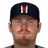
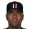
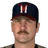
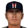
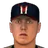
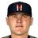
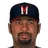

Franchise record book · FBL
Vancouver Mounties
Seasons covered: 2002–2002. Only games played for this franchise count.
This club has no pre-2002 history in the export, so its record book is the 2002 season to date. Rate records need 3.1 PA or 1 inning per team game.
Home runs
| # | Player | Season | Team | Home runs |
|---|---|---|---|---|
| #1 | Mark Bellhorn • | 2002 (FBL) |  Vancouver Mounties Vancouver Mounties | 11 |
| #2 |  Bucky Jacobsen • | 2002 (FBL) | Vancouver Mounties | 11 |
| #3 | Edgar Martinez • | 2002 (FBL) | Vancouver Mounties | 7 |
| #4 | 2002 (FBL) | Vancouver Mounties | 4 | |
| #5 | Ryan McGuire • | 2002 (FBL) | Vancouver Mounties | 3 |
| #6 | 2002 (FBL) | Vancouver Mounties | 3 | |
| #7 |  Deivi Cruz • | 2002 (FBL) | Vancouver Mounties | 2 |
| #8 | 2002 (FBL) | Vancouver Mounties | 2 | |
| #9 | 2002 (FBL) | Vancouver Mounties | 1 | |
| #10 | Marcus Thames • | 2002 (FBL) | Vancouver Mounties | 1 |
Hits
| # | Player | Season | Team | Hits |
|---|---|---|---|---|
| #1 | 2002 (FBL) | Vancouver Mounties | 51 | |
| #2 | Mark Bellhorn • | 2002 (FBL) | Vancouver Mounties | 45 |
| #3 | Bucky Jacobsen • | 2002 (FBL) | Vancouver Mounties | 44 |
| #4 | Mike Redmond • | 2002 (FBL) | Vancouver Mounties | 43 |
| #5 | Edgar Martinez • | 2002 (FBL) | Vancouver Mounties | 43 |
| #6 | Deivi Cruz • | 2002 (FBL) | Vancouver Mounties | 42 |
| #7 | 2002 (FBL) | Vancouver Mounties | 38 | |
| #8 |  Jeff Reboulet • | 2002 (FBL) | Vancouver Mounties | 30 |
| #9 | Marcus Thames • | 2002 (FBL) | Vancouver Mounties | 22 |
| #10 | Ryan McGuire • | 2002 (FBL) | Vancouver Mounties | 18 |
RBI
| # | Player | Season | Team | RBI |
|---|---|---|---|---|
| #1 | Bucky Jacobsen • | 2002 (FBL) | Vancouver Mounties | 36 |
| #2 | Mark Bellhorn • | 2002 (FBL) | Vancouver Mounties | 29 |
| #3 | 2002 (FBL) | Vancouver Mounties | 25 | |
| #4 | Mike Redmond • | 2002 (FBL) | Vancouver Mounties | 21 |
| #5 | Jeff Reboulet • | 2002 (FBL) | Vancouver Mounties | 18 |
| #6 | Edgar Martinez • | 2002 (FBL) | Vancouver Mounties | 18 |
| #7 | Deivi Cruz • | 2002 (FBL) | Vancouver Mounties | 16 |
| #8 | 2002 (FBL) | Vancouver Mounties | 14 | |
| #9 | Marcus Thames • | 2002 (FBL) | Vancouver Mounties | 9 |
| #10 | Ryan McGuire • | 2002 (FBL) | Vancouver Mounties | 8 |
Runs
| # | Player | Season | Team | Runs |
|---|---|---|---|---|
| #1 | Mark Bellhorn • | 2002 (FBL) | Vancouver Mounties | 32 |
| #2 | Edgar Martinez • | 2002 (FBL) | Vancouver Mounties | 32 |
| #3 | Bucky Jacobsen • | 2002 (FBL) | Vancouver Mounties | 32 |
| #4 | 2002 (FBL) | Vancouver Mounties | 26 | |
| #5 | 2002 (FBL) | Vancouver Mounties | 22 | |
| #6 | Deivi Cruz • | 2002 (FBL) | Vancouver Mounties | 20 |
| #7 | Mike Redmond • | 2002 (FBL) | Vancouver Mounties | 14 |
| #8 | Marcus Thames • | 2002 (FBL) | Vancouver Mounties | 11 |
| #9 | Jeff Reboulet • | 2002 (FBL) | Vancouver Mounties | 11 |
| #10 | 2002 (FBL) | Vancouver Mounties | 7 |
Stolen bases
| # | Player | Season | Team | Stolen bases |
|---|---|---|---|---|
| #1 | 2002 (FBL) | Vancouver Mounties | 10 | |
| #2 | Mark Bellhorn • | 2002 (FBL) | Vancouver Mounties | 4 |
| #3 | Bucky Jacobsen • | 2002 (FBL) | Vancouver Mounties | 4 |
| #4 | Marcus Thames • | 2002 (FBL) | Vancouver Mounties | 3 |
| #5 | 2002 (FBL) | Vancouver Mounties | 2 | |
| #6 | 2002 (FBL) | Vancouver Mounties | 1 | |
| #7 | Jeff Reboulet • | 2002 (FBL) | Vancouver Mounties | 1 |
| #8 | Edgar Martinez • | 2002 (FBL) | Vancouver Mounties | 1 |
| #9 | Ryan McGuire • | 2002 (FBL) | Vancouver Mounties | 1 |
| #10 | 2002 (FBL) | Vancouver Mounties | 0 |
Doubles
| # | Player | Season | Team | Doubles |
|---|---|---|---|---|
| #1 | 2002 (FBL) | Vancouver Mounties | 15 | |
| #2 | Mark Bellhorn • | 2002 (FBL) | Vancouver Mounties | 11 |
| #3 | Mike Redmond • | 2002 (FBL) | Vancouver Mounties | 9 |
| #4 | Edgar Martinez • | 2002 (FBL) | Vancouver Mounties | 9 |
| #5 | Deivi Cruz • | 2002 (FBL) | Vancouver Mounties | 8 |
| #6 | Jeff Reboulet • | 2002 (FBL) | Vancouver Mounties | 7 |
| #7 | 2002 (FBL) | Vancouver Mounties | 5 | |
| #8 | Bucky Jacobsen • | 2002 (FBL) | Vancouver Mounties | 5 |
| #9 | Marcus Thames • | 2002 (FBL) | Vancouver Mounties | 3 |
| #10 | Ryan McGuire • | 2002 (FBL) | Vancouver Mounties | 3 |
Triples
| # | Player | Season | Team | Triples |
|---|---|---|---|---|
| #1 | 2002 (FBL) | Vancouver Mounties | 3 | |
| #2 | 2002 (FBL) | Vancouver Mounties | 1 | |
| #3 | Deivi Cruz • | 2002 (FBL) | Vancouver Mounties | 1 |
| #4 | Edgar Martinez • | 2002 (FBL) | Vancouver Mounties | 1 |
| #5 | Bucky Jacobsen • | 2002 (FBL) | Vancouver Mounties | 1 |
| #6 | 2002 (FBL) | Vancouver Mounties | 0 | |
| #7 | 2002 (FBL) | Vancouver Mounties | 0 | |
| #8 | Marcus Thames • | 2002 (FBL) | Vancouver Mounties | 0 |
| #9 | Mark Bellhorn • | 2002 (FBL) | Vancouver Mounties | 0 |
| #10 | Mike Redmond • | 2002 (FBL) | Vancouver Mounties | 0 |
Walks
| # | Player | Season | Team | Walks |
|---|---|---|---|---|
| #1 | Edgar Martinez • | 2002 (FBL) | Vancouver Mounties | 26 |
| #2 | Mark Bellhorn • | 2002 (FBL) | Vancouver Mounties | 22 |
| #3 | 2002 (FBL) | Vancouver Mounties | 19 | |
| #4 | Bucky Jacobsen • | 2002 (FBL) | Vancouver Mounties | 17 |
| #5 | Marcus Thames • | 2002 (FBL) | Vancouver Mounties | 13 |
| #6 | 2002 (FBL) | Vancouver Mounties | 11 | |
| #7 | Jeff Reboulet • | 2002 (FBL) | Vancouver Mounties | 10 |
| #8 | Mike Redmond • | 2002 (FBL) | Vancouver Mounties | 8 |
| #9 | Ryan McGuire • | 2002 (FBL) | Vancouver Mounties | 8 |
| #10 | Deivi Cruz • | 2002 (FBL) | Vancouver Mounties | 7 |
Total bases
| # | Player | Season | Team | Total bases |
|---|---|---|---|---|
| #1 | Mark Bellhorn • | 2002 (FBL) | Vancouver Mounties | 89 |
| #2 | Bucky Jacobsen • | 2002 (FBL) | Vancouver Mounties | 84 |
| #3 | 2002 (FBL) | Vancouver Mounties | 78 | |
| #4 | Edgar Martinez • | 2002 (FBL) | Vancouver Mounties | 75 |
| #5 | Deivi Cruz • | 2002 (FBL) | Vancouver Mounties | 58 |
| #6 | 2002 (FBL) | Vancouver Mounties | 56 | |
| #7 | Mike Redmond • | 2002 (FBL) | Vancouver Mounties | 52 |
| #8 | Jeff Reboulet • | 2002 (FBL) | Vancouver Mounties | 40 |
| #9 | Ryan McGuire • | 2002 (FBL) | Vancouver Mounties | 30 |
| #10 | Marcus Thames • | 2002 (FBL) | Vancouver Mounties | 28 |
Batting average qualified
| # | Player | Season | Team | Batting average |
|---|---|---|---|---|
| #1 | 2002 (FBL) | Vancouver Mounties | .340 | |
| #2 | Mike Redmond • | 2002 (FBL) | Vancouver Mounties | .328 |
| #3 | Edgar Martinez • | 2002 (FBL) | Vancouver Mounties | .303 |
| #4 | Mark Bellhorn • | 2002 (FBL) | Vancouver Mounties | .302 |
| #5 | Deivi Cruz • | 2002 (FBL) | Vancouver Mounties | .292 |
| #6 | Bucky Jacobsen • | 2002 (FBL) | Vancouver Mounties | .275 |
| #7 | Jeff Reboulet • | 2002 (FBL) | Vancouver Mounties | .250 |
| #8 | 2002 (FBL) | Vancouver Mounties | .235 |
On-base % qualified
| # | Player | Season | Team | On-base % |
|---|---|---|---|---|
| #1 | Edgar Martinez • | 2002 (FBL) | Vancouver Mounties | .414 |
| #2 | 2002 (FBL) | Vancouver Mounties | .412 | |
| #3 | Mark Bellhorn • | 2002 (FBL) | Vancouver Mounties | .390 |
| #4 | Mike Redmond • | 2002 (FBL) | Vancouver Mounties | .364 |
| #5 | Bucky Jacobsen • | 2002 (FBL) | Vancouver Mounties | .348 |
| #6 | Deivi Cruz • | 2002 (FBL) | Vancouver Mounties | .320 |
| #7 | Jeff Reboulet • | 2002 (FBL) | Vancouver Mounties | .311 |
| #8 | 2002 (FBL) | Vancouver Mounties | .280 |
Slugging % qualified
| # | Player | Season | Team | Slugging % |
|---|---|---|---|---|
| #1 | Mark Bellhorn • | 2002 (FBL) | Vancouver Mounties | .597 |
| #2 | Edgar Martinez • | 2002 (FBL) | Vancouver Mounties | .528 |
| #3 | Bucky Jacobsen • | 2002 (FBL) | Vancouver Mounties | .525 |
| #4 | 2002 (FBL) | Vancouver Mounties | .520 | |
| #5 | Deivi Cruz • | 2002 (FBL) | Vancouver Mounties | .403 |
| #6 | Mike Redmond • | 2002 (FBL) | Vancouver Mounties | .397 |
| #7 | 2002 (FBL) | Vancouver Mounties | .346 | |
| #8 | Jeff Reboulet • | 2002 (FBL) | Vancouver Mounties | .333 |
OPS qualified
| # | Player | Season | Team | OPS |
|---|---|---|---|---|
| #1 | Mark Bellhorn • | 2002 (FBL) | Vancouver Mounties | .987 |
| #2 | Edgar Martinez • | 2002 (FBL) | Vancouver Mounties | .942 |
| #3 | 2002 (FBL) | Vancouver Mounties | .932 | |
| #4 | Bucky Jacobsen • | 2002 (FBL) | Vancouver Mounties | .873 |
| #5 | Mike Redmond • | 2002 (FBL) | Vancouver Mounties | .761 |
| #6 | Deivi Cruz • | 2002 (FBL) | Vancouver Mounties | .723 |
| #7 | Jeff Reboulet • | 2002 (FBL) | Vancouver Mounties | .644 |
| #8 | 2002 (FBL) | Vancouver Mounties | .626 |
WAR (OOTP)
| # | Player | Season | Team | WAR (OOTP) |
|---|---|---|---|---|
| #1 | Mark Bellhorn • | 2002 (FBL) | Vancouver Mounties | 1.7 |
| #2 | Edgar Martinez • | 2002 (FBL) | Vancouver Mounties | 1.5 |
| #3 | 2002 (FBL) | Vancouver Mounties | 1.4 | |
| #4 | Deivi Cruz • | 2002 (FBL) | Vancouver Mounties | 0.7 |
| #5 | Mike Redmond • | 2002 (FBL) | Vancouver Mounties | 0.6 |
| #6 | Bucky Jacobsen • | 2002 (FBL) | Vancouver Mounties | 0.5 |
| #7 | 2002 (FBL) | Vancouver Mounties | 0.5 | |
| #8 | 2002 (FBL) | Vancouver Mounties | 0.3 | |
| #9 | Marcus Thames • | 2002 (FBL) | Vancouver Mounties | 0.0 |
| #10 | 2002 (FBL) | Vancouver Mounties | 0.0 |
Wins
| # | Player | Season | Team | Wins |
|---|---|---|---|---|
| #1 | Dicky Gonzalez • | 2002 (FBL) | Vancouver Mounties | 5 |
| #2 | Jamie Moyer • | 2002 (FBL) | Vancouver Mounties | 4 |
| #3 |  Adam Pettyjohn • | 2002 (FBL) | Vancouver Mounties | 3 |
| #4 | Jimmy Serrano • | 2002 (FBL) | Vancouver Mounties | 3 |
| #5 |  Larry Luebbers • | 2002 (FBL) | Vancouver Mounties | 2 |
| #6 | Dan Haren • | 2002 (FBL) | Vancouver Mounties | 2 |
| #7 | Luther Hackman • | 2002 (FBL) | Vancouver Mounties | 1 |
| #8 |  Dave Maurer • | 2002 (FBL) | Vancouver Mounties | 1 |
| #9 | Trever Miller • | 2002 (FBL) | Vancouver Mounties | 1 |
| #10 | 2002 (FBL) | Vancouver Mounties | 1 |
Strikeouts
| # | Player | Season | Team | Strikeouts |
|---|---|---|---|---|
| #1 | Dan Haren • | 2002 (FBL) | Vancouver Mounties | 40 |
| #2 | Jamie Moyer • | 2002 (FBL) | Vancouver Mounties | 36 |
| #3 | Dicky Gonzalez • | 2002 (FBL) | Vancouver Mounties | 32 |
| #4 | Dave Maurer • | 2002 (FBL) | Vancouver Mounties | 26 |
| #5 | Adam Pettyjohn • | 2002 (FBL) | Vancouver Mounties | 21 |
| #6 | Larry Luebbers • | 2002 (FBL) | Vancouver Mounties | 21 |
| #7 | 2002 (FBL) | Vancouver Mounties | 16 | |
| #8 | Jimmy Serrano • | 2002 (FBL) | Vancouver Mounties | 15 |
| #9 | Joaquin Benoit • | 2002 (FBL) | Vancouver Mounties | 14 |
| #10 | Luther Hackman • | 2002 (FBL) | Vancouver Mounties | 11 |
Saves
| # | Player | Season | Team | Saves |
|---|---|---|---|---|
| #1 |  Jose Mesa • | 2002 (FBL) | Vancouver Mounties | 11 |
| #2 | Joaquin Benoit • | 2002 (FBL) | Vancouver Mounties | 2 |
| #3 | Dave Maurer • | 2002 (FBL) | Vancouver Mounties | 1 |
| #4 | Jimmy Serrano • | 2002 (FBL) | Vancouver Mounties | 1 |
| #5 | Jamie Moyer • | 2002 (FBL) | Vancouver Mounties | 0 |
| #6 | Adam Pettyjohn • | 2002 (FBL) | Vancouver Mounties | 0 |
| #7 | Dicky Gonzalez • | 2002 (FBL) | Vancouver Mounties | 0 |
| #8 | Luther Hackman • | 2002 (FBL) | Vancouver Mounties | 0 |
| #9 | Larry Luebbers • | 2002 (FBL) | Vancouver Mounties | 0 |
| #10 | Trever Miller • | 2002 (FBL) | Vancouver Mounties | 0 |
Innings
| # | Player | Season | Team | Innings |
|---|---|---|---|---|
| #1 | Jamie Moyer • | 2002 (FBL) | Vancouver Mounties | 56.0 |
| #2 | Dicky Gonzalez • | 2002 (FBL) | Vancouver Mounties | 50.1 |
| #3 | Adam Pettyjohn • | 2002 (FBL) | Vancouver Mounties | 46.0 |
| #4 | Dan Haren • | 2002 (FBL) | Vancouver Mounties | 45.2 |
| #5 | Larry Luebbers • | 2002 (FBL) | Vancouver Mounties | 31.2 |
| #6 | Dave Maurer • | 2002 (FBL) | Vancouver Mounties | 29.2 |
| #7 | Luther Hackman • | 2002 (FBL) | Vancouver Mounties | 25.1 |
| #8 | 2002 (FBL) | Vancouver Mounties | 21.1 | |
| #9 | Jimmy Serrano • | 2002 (FBL) | Vancouver Mounties | 17.0 |
| #10 | Joaquin Benoit • | 2002 (FBL) | Vancouver Mounties | 15.0 |
Complete games
| # | Player | Season | Team | Complete games |
|---|---|---|---|---|
| #1 | Joaquin Benoit • | 2002 (FBL) | Vancouver Mounties | 0 |
| #2 | Jamie Moyer • | 2002 (FBL) | Vancouver Mounties | 0 |
| #3 | Adam Pettyjohn • | 2002 (FBL) | Vancouver Mounties | 0 |
| #4 | Dicky Gonzalez • | 2002 (FBL) | Vancouver Mounties | 0 |
| #5 | Luther Hackman • | 2002 (FBL) | Vancouver Mounties | 0 |
| #6 | Larry Luebbers • | 2002 (FBL) | Vancouver Mounties | 0 |
| #7 | Jose Mesa • | 2002 (FBL) | Vancouver Mounties | 0 |
| #8 | Dave Maurer • | 2002 (FBL) | Vancouver Mounties | 0 |
| #9 | Trever Miller • | 2002 (FBL) | Vancouver Mounties | 0 |
| #10 | 2002 (FBL) | Vancouver Mounties | 0 |
Shutouts
| # | Player | Season | Team | Shutouts |
|---|---|---|---|---|
| #1 | Joaquin Benoit • | 2002 (FBL) | Vancouver Mounties | 0 |
| #2 | Jamie Moyer • | 2002 (FBL) | Vancouver Mounties | 0 |
| #3 | Adam Pettyjohn • | 2002 (FBL) | Vancouver Mounties | 0 |
| #4 | Dicky Gonzalez • | 2002 (FBL) | Vancouver Mounties | 0 |
| #5 | Luther Hackman • | 2002 (FBL) | Vancouver Mounties | 0 |
| #6 | Larry Luebbers • | 2002 (FBL) | Vancouver Mounties | 0 |
| #7 | Jose Mesa • | 2002 (FBL) | Vancouver Mounties | 0 |
| #8 | Dave Maurer • | 2002 (FBL) | Vancouver Mounties | 0 |
| #9 | Trever Miller • | 2002 (FBL) | Vancouver Mounties | 0 |
| #10 | 2002 (FBL) | Vancouver Mounties | 0 |
ERA qualified
| # | Player | Season | Team | ERA |
|---|---|---|---|---|
| #1 | Jamie Moyer • | 2002 (FBL) | Vancouver Mounties | 3.54 |
| #2 | Dicky Gonzalez • | 2002 (FBL) | Vancouver Mounties | 4.29 |
| #3 | Adam Pettyjohn • | 2002 (FBL) | Vancouver Mounties | 5.09 |
| #4 | Dan Haren • | 2002 (FBL) | Vancouver Mounties | 7.09 |
WHIP qualified
| # | Player | Season | Team | WHIP |
|---|---|---|---|---|
| #1 | Adam Pettyjohn • | 2002 (FBL) | Vancouver Mounties | 1.20 |
| #2 | Jamie Moyer • | 2002 (FBL) | Vancouver Mounties | 1.23 |
| #3 | Dicky Gonzalez • | 2002 (FBL) | Vancouver Mounties | 1.31 |
| #4 | Dan Haren • | 2002 (FBL) | Vancouver Mounties | 1.55 |
K/9 qualified
| # | Player | Season | Team | K/9 |
|---|---|---|---|---|
| #1 | Dan Haren • | 2002 (FBL) | Vancouver Mounties | 7.9 |
| #2 | Jamie Moyer • | 2002 (FBL) | Vancouver Mounties | 5.8 |
| #3 | Dicky Gonzalez • | 2002 (FBL) | Vancouver Mounties | 5.7 |
| #4 | Adam Pettyjohn • | 2002 (FBL) | Vancouver Mounties | 4.1 |
WAR (OOTP)
| # | Player | Season | Team | WAR (OOTP) |
|---|---|---|---|---|
| #1 | Jamie Moyer • | 2002 (FBL) | Vancouver Mounties | 1.5 |
| #2 | Dan Haren • | 2002 (FBL) | Vancouver Mounties | 1.3 |
| #3 | Dicky Gonzalez • | 2002 (FBL) | Vancouver Mounties | 1.0 |
| #4 | Adam Pettyjohn • | 2002 (FBL) | Vancouver Mounties | 0.7 |
| #5 | Dave Maurer • | 2002 (FBL) | Vancouver Mounties | 0.3 |
| #6 | Joaquin Benoit • | 2002 (FBL) | Vancouver Mounties | 0.2 |
| #7 | Jose Mesa • | 2002 (FBL) | Vancouver Mounties | 0.2 |
| #8 | Jimmy Serrano • | 2002 (FBL) | Vancouver Mounties | 0.1 |
| #9 | Trever Miller • | 2002 (FBL) | Vancouver Mounties | 0.1 |
| #10 | Larry Luebbers • | 2002 (FBL) | Vancouver Mounties | -0.1 |
Home runs
| # | Player | Years | Home runs |
|---|---|---|---|
| #1 | Mark Bellhorn • | 1997–02 | 11 |
| #2 | Bucky Jacobsen • | 2002–02 | 11 |
| #3 | Edgar Martinez • | 1987–02 | 7 |
| #4 | 1995–02 | 4 | |
| #5 | Ryan McGuire • | 1997–02 | 3 |
| #6 | 2002–02 | 3 | |
| #7 | Deivi Cruz • | 1997–02 | 2 |
| #8 | 2002–02 | 2 | |
| #9 | 1998–02 | 1 | |
| #10 | Marcus Thames • | 2002–02 | 1 |
Hits
| # | Player | Years | Hits |
|---|---|---|---|
| #1 | 1995–02 | 51 | |
| #2 | Mark Bellhorn • | 1997–02 | 45 |
| #3 | Bucky Jacobsen • | 2002–02 | 44 |
| #4 | Mike Redmond • | 1998–02 | 43 |
| #5 | Edgar Martinez • | 1987–02 | 43 |
| #6 | Deivi Cruz • | 1997–02 | 42 |
| #7 | 2002–02 | 38 | |
| #8 | Jeff Reboulet • | 1992–02 | 30 |
| #9 | Marcus Thames • | 2002–02 | 22 |
| #10 | Ryan McGuire • | 1997–02 | 18 |
RBI
| # | Player | Years | RBI |
|---|---|---|---|
| #1 | Bucky Jacobsen • | 2002–02 | 36 |
| #2 | Mark Bellhorn • | 1997–02 | 29 |
| #3 | 1995–02 | 25 | |
| #4 | Mike Redmond • | 1998–02 | 21 |
| #5 | Jeff Reboulet • | 1992–02 | 18 |
| #6 | Edgar Martinez • | 1987–02 | 18 |
| #7 | Deivi Cruz • | 1997–02 | 16 |
| #8 | 2002–02 | 14 | |
| #9 | Marcus Thames • | 2002–02 | 9 |
| #10 | Ryan McGuire • | 1997–02 | 8 |
Runs
| # | Player | Years | Runs |
|---|---|---|---|
| #1 | Mark Bellhorn • | 1997–02 | 32 |
| #2 | Edgar Martinez • | 1987–02 | 32 |
| #3 | Bucky Jacobsen • | 2002–02 | 32 |
| #4 | 1995–02 | 26 | |
| #5 | 2002–02 | 22 | |
| #6 | Deivi Cruz • | 1997–02 | 20 |
| #7 | Mike Redmond • | 1998–02 | 14 |
| #8 | Marcus Thames • | 2002–02 | 11 |
| #9 | Jeff Reboulet • | 1992–02 | 11 |
| #10 | 1998–02 | 7 |
Stolen bases
| # | Player | Years | Stolen bases |
|---|---|---|---|
| #1 | 2002–02 | 10 | |
| #2 | Mark Bellhorn • | 1997–02 | 4 |
| #3 | Bucky Jacobsen • | 2002–02 | 4 |
| #4 | Marcus Thames • | 2002–02 | 3 |
| #5 | 1995–02 | 2 | |
| #6 | 1998–02 | 1 | |
| #7 | Jeff Reboulet • | 1992–02 | 1 |
| #8 | Edgar Martinez • | 1987–02 | 1 |
| #9 | Ryan McGuire • | 1997–02 | 1 |
| #10 | 1996–02 | 0 |
Doubles
| # | Player | Years | Doubles |
|---|---|---|---|
| #1 | 1995–02 | 15 | |
| #2 | Mark Bellhorn • | 1997–02 | 11 |
| #3 | Mike Redmond • | 1998–02 | 9 |
| #4 | Edgar Martinez • | 1987–02 | 9 |
| #5 | Deivi Cruz • | 1997–02 | 8 |
| #6 | Jeff Reboulet • | 1992–02 | 7 |
| #7 | 1998–02 | 5 | |
| #8 | Bucky Jacobsen • | 2002–02 | 5 |
| #9 | Marcus Thames • | 2002–02 | 3 |
| #10 | Ryan McGuire • | 1997–02 | 3 |
Triples
| # | Player | Years | Triples |
|---|---|---|---|
| #1 | 2002–02 | 3 | |
| #2 | 1998–02 | 1 | |
| #3 | Deivi Cruz • | 1997–02 | 1 |
| #4 | Edgar Martinez • | 1987–02 | 1 |
| #5 | Bucky Jacobsen • | 2002–02 | 1 |
| #6 | 1996–02 | 0 | |
| #7 | 1995–02 | 0 | |
| #8 | Marcus Thames • | 2002–02 | 0 |
| #9 | Mark Bellhorn • | 1997–02 | 0 |
| #10 | Mike Redmond • | 1998–02 | 0 |
Walks
| # | Player | Years | Walks |
|---|---|---|---|
| #1 | Edgar Martinez • | 1987–02 | 26 |
| #2 | Mark Bellhorn • | 1997–02 | 22 |
| #3 | 1995–02 | 19 | |
| #4 | Bucky Jacobsen • | 2002–02 | 17 |
| #5 | Marcus Thames • | 2002–02 | 13 |
| #6 | 2002–02 | 11 | |
| #7 | Jeff Reboulet • | 1992–02 | 10 |
| #8 | Mike Redmond • | 1998–02 | 8 |
| #9 | Ryan McGuire • | 1997–02 | 8 |
| #10 | Deivi Cruz • | 1997–02 | 7 |
Total bases
| # | Player | Years | Total bases |
|---|---|---|---|
| #1 | Mark Bellhorn • | 1997–02 | 89 |
| #2 | Bucky Jacobsen • | 2002–02 | 84 |
| #3 | 1995–02 | 78 | |
| #4 | Edgar Martinez • | 1987–02 | 75 |
| #5 | Deivi Cruz • | 1997–02 | 58 |
| #6 | 2002–02 | 56 | |
| #7 | Mike Redmond • | 1998–02 | 52 |
| #8 | Jeff Reboulet • | 1992–02 | 40 |
| #9 | Ryan McGuire • | 1997–02 | 30 |
| #10 | Marcus Thames • | 2002–02 | 28 |
Batting average min 2,000 PA
| # | Player | Years | Batting average |
|---|
On-base % min 2,000 PA
| # | Player | Years | On-base % |
|---|
Slugging % min 2,000 PA
| # | Player | Years | Slugging % |
|---|
OPS min 2,000 PA
| # | Player | Years | OPS |
|---|
WAR (OOTP)
| # | Player | Years | WAR (OOTP) |
|---|---|---|---|
| #1 | Mark Bellhorn • | 1997–02 | 1.7 |
| #2 | Edgar Martinez • | 1987–02 | 1.5 |
| #3 | 1995–02 | 1.4 | |
| #4 | Deivi Cruz • | 1997–02 | 0.7 |
| #5 | Mike Redmond • | 1998–02 | 0.6 |
| #6 | Bucky Jacobsen • | 2002–02 | 0.5 |
| #7 | 1998–02 | 0.5 | |
| #8 | 2002–02 | 0.3 | |
| #9 | Marcus Thames • | 2002–02 | 0.0 |
| #10 | 2002–02 | 0.0 |
Wins
| # | Player | Years | Wins |
|---|---|---|---|
| #1 | Dicky Gonzalez • | 2001–02 | 5 |
| #2 | Jamie Moyer • | 1986–02 | 4 |
| #3 | Adam Pettyjohn • | 2001–02 | 3 |
| #4 | Jimmy Serrano • | 2002–02 | 3 |
| #5 | Larry Luebbers • | 1993–02 | 2 |
| #6 | Dan Haren • | 2002–02 | 2 |
| #7 | Luther Hackman • | 1999–02 | 1 |
| #8 | Dave Maurer • | 2000–02 | 1 |
| #9 | Trever Miller • | 1996–02 | 1 |
| #10 | 2000–02 | 1 |
Strikeouts
| # | Player | Years | Strikeouts |
|---|---|---|---|
| #1 | Dan Haren • | 2002–02 | 40 |
| #2 | Jamie Moyer • | 1986–02 | 36 |
| #3 | Dicky Gonzalez • | 2001–02 | 32 |
| #4 | Dave Maurer • | 2000–02 | 26 |
| #5 | Adam Pettyjohn • | 2001–02 | 21 |
| #6 | Larry Luebbers • | 1993–02 | 21 |
| #7 | 2000–02 | 16 | |
| #8 | Jimmy Serrano • | 2002–02 | 15 |
| #9 | Joaquin Benoit • | 2001–02 | 14 |
| #10 | Luther Hackman • | 1999–02 | 11 |
Saves
| # | Player | Years | Saves |
|---|---|---|---|
| #1 | Jose Mesa • | 1987–02 | 11 |
| #2 | Joaquin Benoit • | 2001–02 | 2 |
| #3 | Dave Maurer • | 2000–02 | 1 |
| #4 | Jimmy Serrano • | 2002–02 | 1 |
| #5 | Jamie Moyer • | 1986–02 | 0 |
| #6 | Adam Pettyjohn • | 2001–02 | 0 |
| #7 | Dicky Gonzalez • | 2001–02 | 0 |
| #8 | Luther Hackman • | 1999–02 | 0 |
| #9 | Larry Luebbers • | 1993–02 | 0 |
| #10 | Trever Miller • | 1996–02 | 0 |
Innings
| # | Player | Years | Innings |
|---|---|---|---|
| #1 | Jamie Moyer • | 1986–02 | 56.0 |
| #2 | Dicky Gonzalez • | 2001–02 | 50.1 |
| #3 | Adam Pettyjohn • | 2001–02 | 46.0 |
| #4 | Dan Haren • | 2002–02 | 45.2 |
| #5 | Larry Luebbers • | 1993–02 | 31.2 |
| #6 | Dave Maurer • | 2000–02 | 29.2 |
| #7 | Luther Hackman • | 1999–02 | 25.1 |
| #8 | 2000–02 | 21.1 | |
| #9 | Jimmy Serrano • | 2002–02 | 17.0 |
| #10 | Joaquin Benoit • | 2001–02 | 15.0 |
Complete games
| # | Player | Years | Complete games |
|---|---|---|---|
| #1 | Joaquin Benoit • | 2001–02 | 0 |
| #2 | Jamie Moyer • | 1986–02 | 0 |
| #3 | Adam Pettyjohn • | 2001–02 | 0 |
| #4 | Dicky Gonzalez • | 2001–02 | 0 |
| #5 | Luther Hackman • | 1999–02 | 0 |
| #6 | Larry Luebbers • | 1993–02 | 0 |
| #7 | Jose Mesa • | 1987–02 | 0 |
| #8 | Dave Maurer • | 2000–02 | 0 |
| #9 | Trever Miller • | 1996–02 | 0 |
| #10 | 2000–02 | 0 |
Shutouts
| # | Player | Years | Shutouts |
|---|---|---|---|
| #1 | Joaquin Benoit • | 2001–02 | 0 |
| #2 | Jamie Moyer • | 1986–02 | 0 |
| #3 | Adam Pettyjohn • | 2001–02 | 0 |
| #4 | Dicky Gonzalez • | 2001–02 | 0 |
| #5 | Luther Hackman • | 1999–02 | 0 |
| #6 | Larry Luebbers • | 1993–02 | 0 |
| #7 | Jose Mesa • | 1987–02 | 0 |
| #8 | Dave Maurer • | 2000–02 | 0 |
| #9 | Trever Miller • | 1996–02 | 0 |
| #10 | 2000–02 | 0 |
ERA min 500 IP
| # | Player | Years | ERA |
|---|
WHIP min 500 IP
| # | Player | Years | WHIP |
|---|
K/9 min 500 IP
| # | Player | Years | K/9 |
|---|
WAR (OOTP)
| # | Player | Years | WAR (OOTP) |
|---|---|---|---|
| #1 | Jamie Moyer • | 1986–02 | 1.5 |
| #2 | Dan Haren • | 2002–02 | 1.3 |
| #3 | Dicky Gonzalez • | 2001–02 | 1.0 |
| #4 | Adam Pettyjohn • | 2001–02 | 0.7 |
| #5 | Dave Maurer • | 2000–02 | 0.3 |
| #6 | Joaquin Benoit • | 2001–02 | 0.2 |
| #7 | Jose Mesa • | 1987–02 | 0.2 |
| #8 | Jimmy Serrano • | 2002–02 | 0.1 |
| #9 | Trever Miller • | 1996–02 | 0.1 |
| #10 | Larry Luebbers • | 1993–02 | -0.1 |